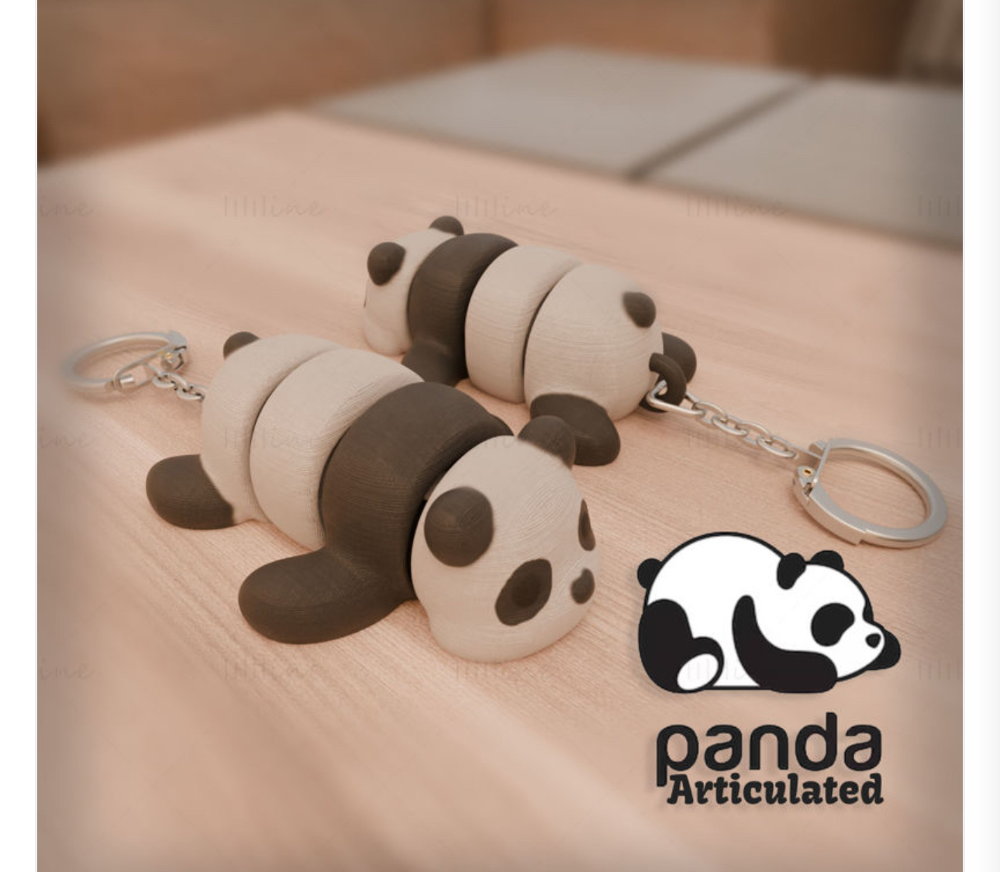
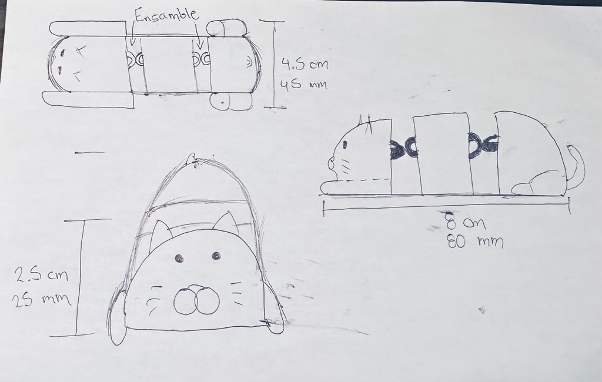
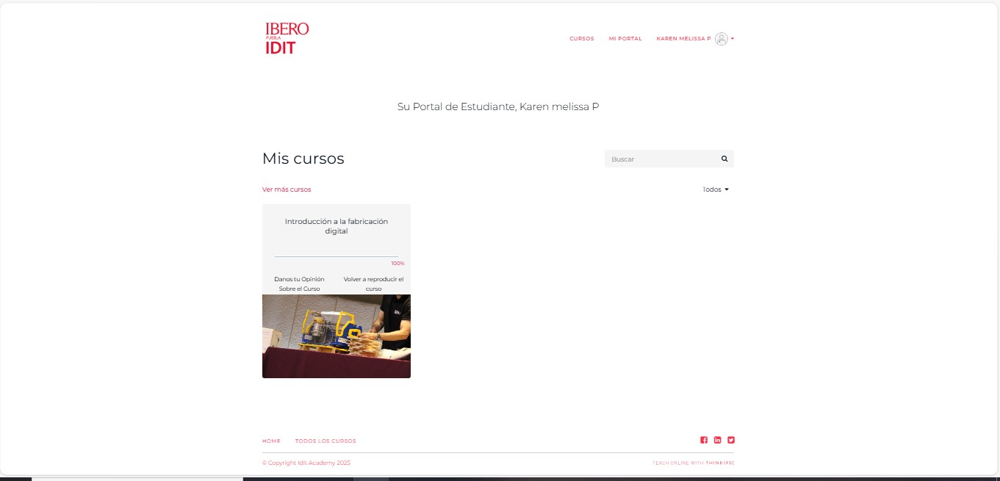
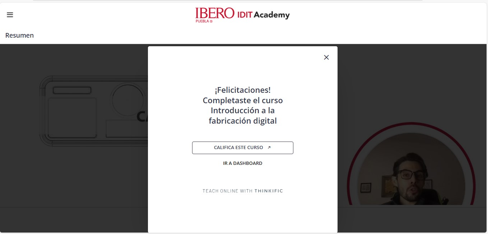
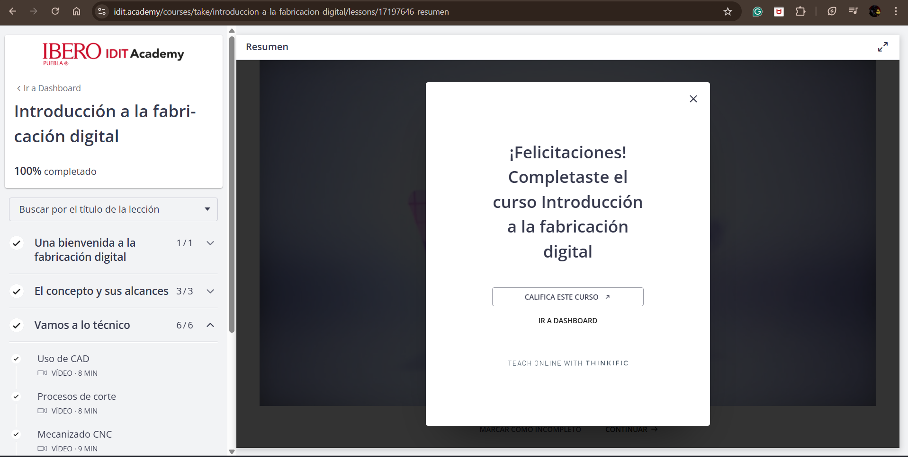

SEMANA 5 (BOCETO 3D)
Boceto de impresión 3D para figura articulada (Parte 1)-Karen
La impresión 3D requiere un proceso específico. Este comienza con la creación de un boceto a mano, que captura las ideas principales del diseño.
Para crear mi boceto, busqué ideas en línea y encontré una imagen de referencia que me gustó, la cual usé como base para crear el diseño de mi ensamblaje.

Luego comencé a dibujar mi boceto a mano, pero en lugar de un panda, decidí crear un gato. Mientras lo hacía, tuve en cuenta las medidas aproximadas para que mi figura no superara los 10 cm de altura y así reducir el tiempo de impresión. Finalmente, este fue el resultado de mi boceto:

Asimismo, realicé el curso de Fabricación Digital en el IDIT Academy, el cual consistía en como lo dice su nombre, dar una introducción a la fabricación digital, desde la historia de los fab labs hasta los diferentes tipos de CNC, tales como las cortadoras laser e impresiones 3D.


Impresión 3D de Figura Articulada (Parte 1) Samantha Ramírez
La impresión 3D es una técnica que permite crear objetos físicos a partir de modelos digitales, agregando material capa por capa hasta formar la pieza final. Esta tecnología se usa mucho en diseño y prototipado porque facilita fabricar objetos con formas complejas de manera rápida y precisa.
En esta actividad, el objetivo fue diseñar y fabricar una figura 3D articulada, similar a una cadena, en la que las piezas estuvieran unidas y pudieran moverse entre sí. Antes de comenzar el diseño, busqué ideas e inspiración de figuras 3D articuladas para entender cómo eran sus uniones y cómo lograban el movimiento. Después de analizar varios ejemplos, decidí crear una figura con forma de gusano, donde la cabeza estaría unida al cuerpo y los diferentes segmentos tendrían uniones que permitirían flexibilidad, simulando el efecto de una cadena.

Una vez definida la idea, realicé un boceto a mano para planear cómo sería el diseño y cómo lograría que las partes quedaran articuladas. En el dibujo fui definiendo la forma del cuerpo y las uniones que conectarían cada parte. Este boceto me ayudó a tener una guía clara para después modelar la figura en 3D y asegurar que funcionara correctamente al momento de imprimirla.
CURSO FABRICACIÓN DIGITAL SAMANTHA
